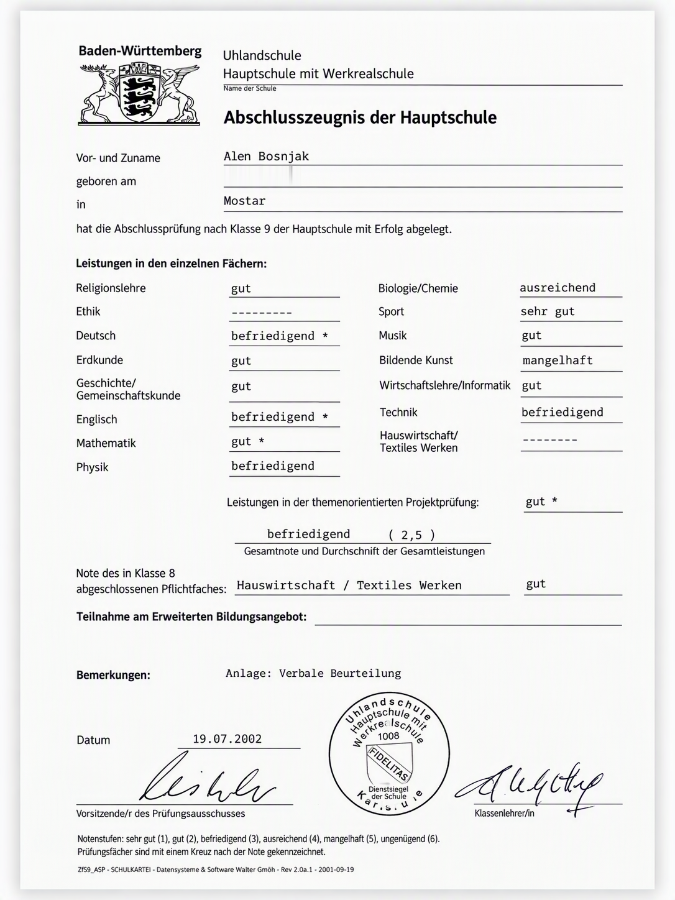
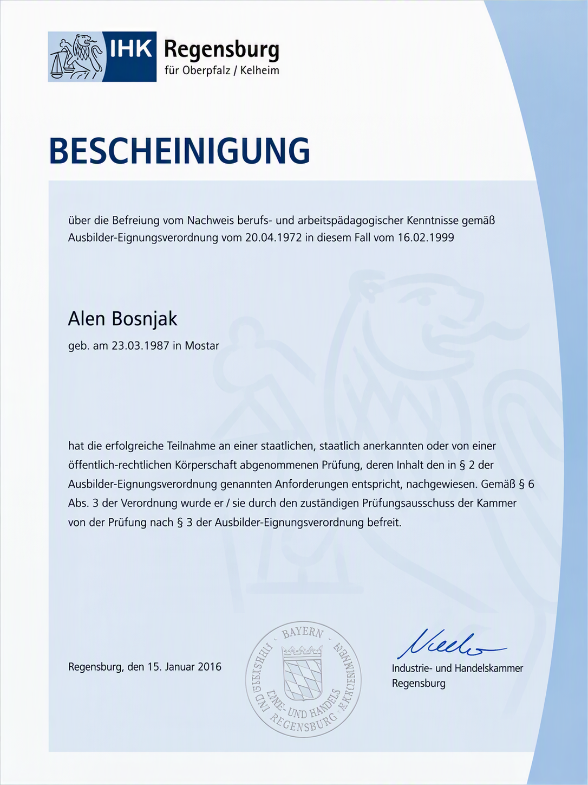
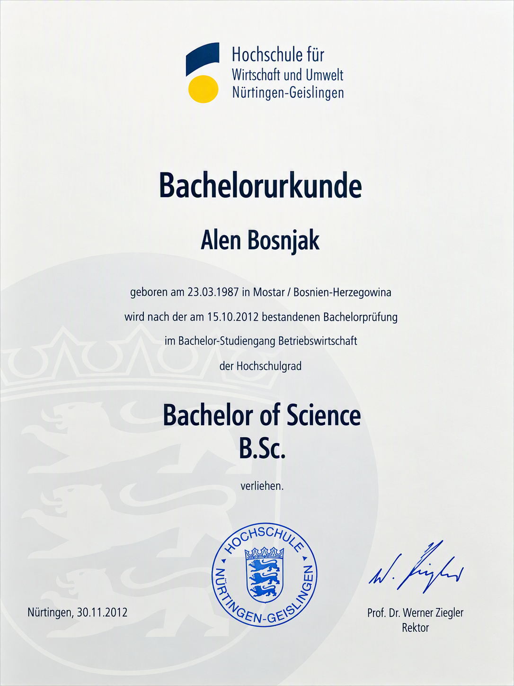
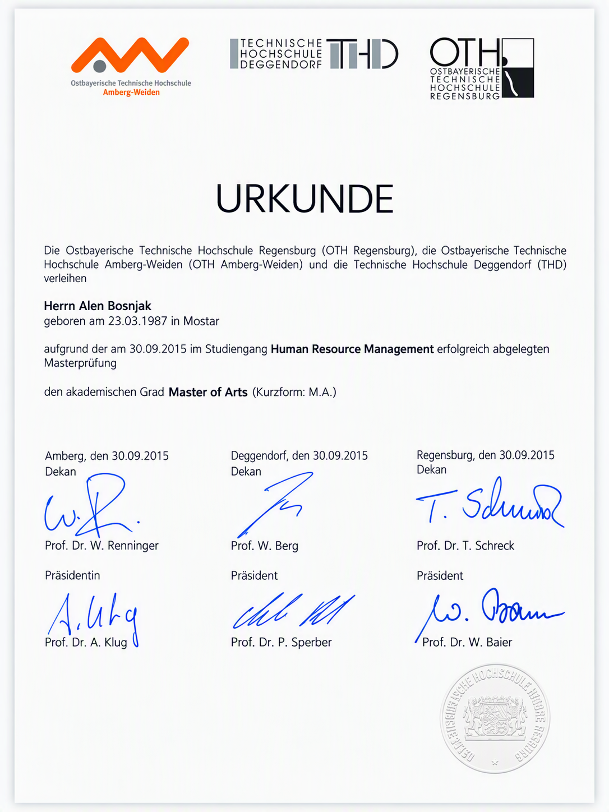
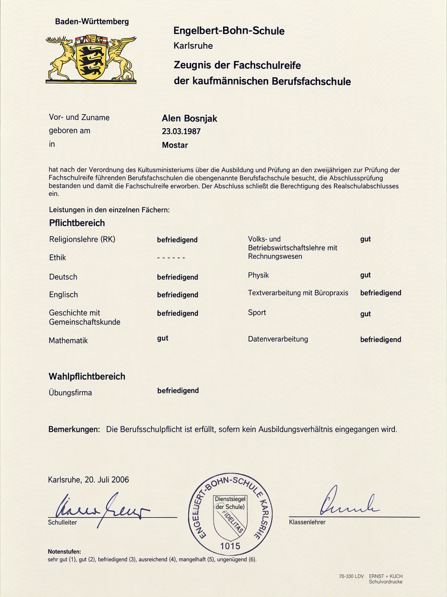

Ankunft in Deutschland
Als Flüchtlingskind aus Bosnien. Aufgewachsen in der Karlsruher Südstadt.
Eine echte Geschichte über Herkunft, Umwege, Rückschläge und Chancen. Für Jugendliche, die ihren eigenen Weg noch suchen.
Für Schulen, Jugendhäuser, Vereine und soziale Einrichtungen im Raum Lampertheim, Mannheim und Karlsruhe.

„Ich bin der Beweis dafür, dass ein Hauptschulabschluss nicht das Ende deiner Geschichte sein muss.“
Nicht als Hochglanz-Erfolgsgeschichte, sondern als ehrlicher Weg mit Unsicherheit, Umwegen, Rückschlägen, Entscheidungen und Menschen, die Türen geöffnet haben.
Als Flüchtlingskind aus Bosnien. Aufgewachsen in der Karlsruher Südstadt.
An der Uhlandschule. Kein Musterschüler und noch ohne klaren Plan.
Berufliche Erfahrungen, neue Chancen und Menschen, die an meine Entwicklung geglaubt haben.
Bachelorabschluss in Betriebswirtschaft. Ein weiterer Schritt, der neue berufliche Möglichkeiten eröffnet hat.
Masterabschluss in Human Resource Management und die Bestätigung, dass Bildung Türen öffnen kann.
Senior Manager mit internationaler Führungsverantwortung.
Ich kenne Zweifel.
Ich kenne Rückschläge.
Ich kenne das Gefühl, wenn andere nicht an dich glauben.
Was mache ich, wenn Schule gerade nicht läuft und mir die Motivation fehlt?
Welcher Weg passt zu mir, meinen Stärken und meiner aktuellen Situation?
Wie kann der eigene Hintergrund ein Teil des Weges sein, ohne die Zukunft zu begrenzen?
Warum Umwege und Fehler nicht bedeuten, dass der eigene Weg gescheitert ist.
Was im Arbeitsleben zählt und wie Menschen ihren eigenen Einstieg finden können.
Entscheidungen treffen, Chancen nutzen und den eigenen Weg bewusst gestalten.
45 Minuten · ideal für Klassen und größere Gruppen
60–90 Minuten · ideal für kleine Gruppen
Gemeinwohlorientiert und in der Aufbauphase kostenfrei: Das Angebot verfolgt keinen kommerziellen Zweck. Im Mittelpunkt stehen echte Begegnungen, Perspektiven für Jugendliche, Erfahrungen und Feedback.
Vom Hauptschulabschluss über berufliche und schulische Weiterbildungen bis zum Studium. Diese Dokumente zeigen: Entwicklung entsteht Schritt für Schritt, und ein früher Abschluss legt das spätere Ziel nicht fest.

Uhlandschule, 2002

Heinrich-Hertz-Schule Karlsruhe, 2004

Walter-Eucken-Schule Karlsruhe, 2007

Human International Academy, San Diego, 2008

Berufliche Weiterentwicklung

Akademische Weiterentwicklung

Human Resource Management, 2015

Ein weiterer Schritt auf meinem Weg
Die Dokumente dienen als persönliche Nachweise meines Bildungswegs. Durch Anklicken werden sie vergrößert angezeigt.
Ich würde sagen, ich war eher ein durchschnittlicher Schüler. Das kann man auch meinen Zeugnissen entnehmen. Entscheidend war für mich aber, dranzubleiben und meine Ziele ehrgeizig Schritt für Schritt zu verfolgen. Und ja, manchmal hatte ich auch Glück, weil sich in bestimmten Situationen Chancen ergeben haben, die meinen Weg mitgeprägt haben.
Wenn ich zurückdenke, hatte ich weniger Angst vor dem Scheitern selbst. Ich hatte vielmehr Angst davor, am Ende nichts in der Hand zu haben, zum Beispiel keinen Schulabschluss und keine Ausbildung. Gleichzeitig wollte ich mich nicht mit dem damals oft klischeehaften Weg zufriedengeben, dass Arbeiterkinder oder geflüchtete Jugendliche keine Ausbildung schaffen oder später nur am Fließband arbeiten. Der Respekt davor, in einer solchen Situation zu bleiben, hat mich motiviert und vorangetrieben.
Ich habe früh verstanden, dass Bildung Türen öffnen kann, die mir damals noch verschlossen waren. Durch Bildung bin ich mit unterschiedlichen Menschen, Perspektiven und Situationen in Kontakt gekommen. Diese Erfahrungen haben mich nicht nur beruflich weitergebracht, sondern auch mein Leben bereichert.
Ja, eigentlich wollte ich Fußballer werden. Irgendwann habe ich aber gemerkt, dass es für den Weg zum Profi nicht reicht. Danach habe ich mich für den Weg der Bildung entschieden, ohne zu wissen, was dieser Lebensweg mit sich bringen und wohin er mich führen würde. Faktisch hatte ich also keinen konkreten Plan. Und das war auch völlig in Ordnung.
Du möchtest im Raum Lampertheim, Mannheim oder Karlsruhe einen Perspektiven-Talk oder eine Gesprächsrunde organisieren? Schreib mir unverbindlich.